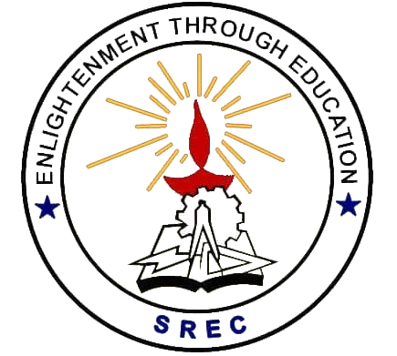

Teaching Assistant, Programming Design Paradigms
- Grade assignments and give feedback on design quality and clean-code adherence.
- Conduct codewalks with students to reinforce good design practices.
M.S. Computer Science

B.Tech, Information Technology
Technical
Software & Tools
Concepts & Practices